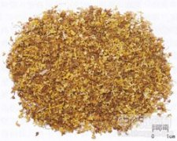

桂花

拼音
Guì Huā
别名
银桂、木犀、九里香
来源
木犀科木犀属植物桂花Osmanthus fragrans Lour.，以花、果实及根入药。秋季采花；冬季采果；四季采根，分别晒干。
生境分布
我国大部分地区均有栽培。
药材特点
木犀（《纲目》），又名：九里香、岩桂（《墨庄漫录》），桂（《花镜》）。 常绿灌木或小乔木，高可达7米，树皮灰白色。叶对生，革质，椭圆形或长椭圆状披针形，长3～8厘米，先端尖或渐尖，基部楔形，全缘或有锐细锯齿，叶脉6～8对，向下面突出；叶柄短。花簇生于叶腋，雌雄异株，具细弱花梗；花萼4裂，裂片齿状；花冠4裂，分裂达于基部，裂片长椭圆形，白色或黄色，芳香；雄花具雄蕊2，隐藏于花冠内；雌花有雌蕊1，花柱圆柱形，柱头头状，子房2室。核果长椭圆形，含种子1枚。花期9～10月。
性状
无性状数据
性味
花：辛，温。 果：辛、甘，温。 根：甘、微涩，平。
功能主治
花：散寒破结，化痰止咳。用于牙痛，咳喘痰多，经闭腹痛。 果：暖胃，平肝，散寒。用于虚寒胃痛。 根：祛风湿，散寒。用于风湿筋骨疼痛，腰痛，肾虚牙痛。
用法用量
花1～4钱。果2～4钱。根2～3两。
化学成分
花含芳香物质，如γ-癸酸内酯、α-紫罗兰酮、β-紫罗兰酮、反-芳樟醇氧化物、顺-芳樟醇氧化物、芳樟醇、壬醛以及β-水芹烯、橙花醇、牻牛儿醇、二氢-β-紫罗兰酮。 花蜡含碳氢化合物、月桂酸、肉豆蔻酸、棕榈酸、硬脂酸。
药理作用
1：无药理作用数据
摘录
《全国中草药汇编》